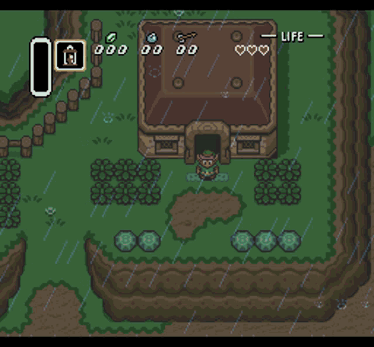

Story

"A long, long time ago the World was in an age of Chaos. "In the midst
of this chaos, in a little kingdom in the land of Hyrule, a legend was
being handed down from generation to generation, the legend of the
'Triforce'; golden triangles possessing mystical powers. One day, an
evil army attacked this peaceful little kingdom and stole the Triforce
of Power. This army was led by Ganon, the powerful Prince of Darkness
who sought to plunge the World into fear and darkness under his rule.
Fearing his wicked rule, Zelda, the princess of this kingdom, split up
the Triforce of Wisdom into eight fragments and hid them throughout the
realm to save the last remaining Triforce from the clutches of the evil
Ganon. At the same time, she commanded her most trustworthy nursemaid,
Impa, to secretly escape into the land and go find a man with enough
courage to destroy the evil Ganon. Upon hearing this, Ganon grew angry,
imprisoned the princess, and sent out a party in search of Impa."
"Braving forests and mountains, Impa fled for her life from her
pursuers. As she reached the very limit of her energy she found herself
surrounded by Ganon's evil henchmen. Cornered! What could she do? ...
But wait! All was not lost. A young lad appeared. He skillfully drove
off Ganon's henchmen, and saved Impa from a fate worse than death." "His
name was Link. During his travels, he had come across Impa and Ganon's
henchmen. Impa told Link the whole story of Princess Zelda and the evil
Ganon. Burning with a sense of justice, Link resolved to save Zelda, but
Ganon was a powerful opponent. He held the Triforce of Power. And so, in
order to fight off Ganon, Link had to bring the scattered eight
fragments of the Triforce of Wisdom together to rebuild the mystical
triangle. If he couldn't do this, there would be no chance Link could
fight his way into Death Mountain where Ganon lived." "Can Link really
destroy Ganon and save Princess Zelda? "Only your skill can answer that
question. Good luck. Use the Triforce wisely."
Gameplay


Although rather basic by today's standards and in comparison to most
later installments of the franchise, the gameplay of the original The
Legend of Zelda introduced a revolutionary level of gaming for its time
that has since become standard for the series (and other games inspired
by it), one that includes roleplaying, action, adventure, and
puzzle/logic.
Dungeon Exploration
Barring Link's progress are Creatures he must battle to locate the
entrances to nine underground Dungeons. Each Dungeon is a unique,
maze-like collection of rooms connected by doors and secret passages and
guarded by monsters different from those found in the Overworld. Link
must successfully navigate each Dungeon to obtain one of the eight
pieces of the Triforce of Wisdom. Dungeons also conceal useful items,
such as a Boomerang for retrieving items and stunning Enemies and a
Flute with magical properties. The first six Dungeons have visible
entrances, but the remaining three are hidden. Except for the final
Dungeon - Death Mountain, which can't be entered until the previous
eight have been completed, the order of completing Dungeons is somewhat
arbitrary, but many Dungeons can only be reached or completed using
items gained in the previous one.